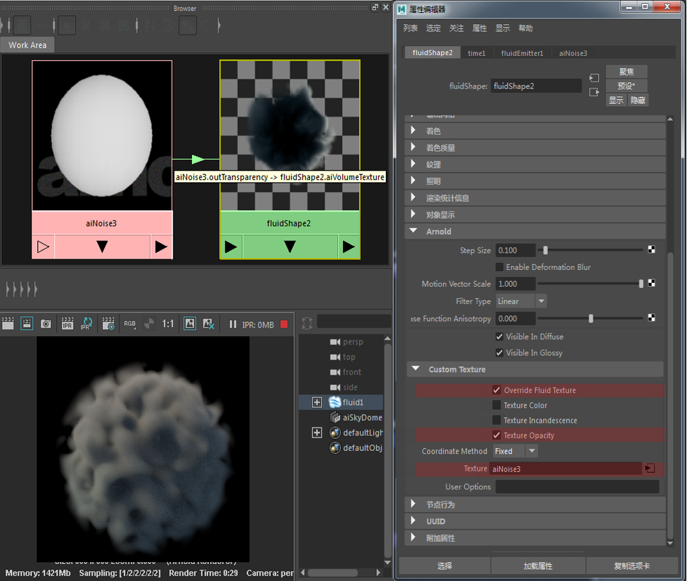

体积目前与 Maya 内部流体和烟雾 FX 兼容。使用体积时存在一些限制。渲染 Maya 流体时的注意事项：
渲染 Maya 体积时，默认情况下将使用流体上设置的灯光，而不是场景中的照明设置（对于 Maya 软件来说是如此，而 mental ray 可以正常渲染）。
即便与 Maya 流体属性匹配，也会存在一些差异。首先，因为在 Arnold 中体积是“基于物理的”，我们需要将其除以 4 * Pi（单位球体的面积）。之所以要这么做，是因为体积无法散射比入射光更多的灯光。使用 Maya 流体和 Maya 体积的线性衰退，将灯光曝光更改为 3.65（大致等于 4 * Pi 乘积）可以解决此问题。
Arnold 使用区域光，Maya 软件不使用，但 mental ray 也使用区域光。比较 Arnold 渲染与 Maya 软件渲染并不合适。
使用 MtoA 渲染时，您需要将 Arnold 灯光强度增加 4 * Pi。
Arnold 中渲染的图像会有一些差异。mental ray 和 Maya 软件都不使用多重重要性采样，但 Arnold 使用。
目前，流体不支持使用渲染标志（例如“主可见性”(Primary Visibility)）。
目前，无法针对流体体积生成大气体积。这是因为大气返回一个不透明度覆盖在任何颜色背景的像素之上的单一平面结果。
灯光链接当前无法与 Maya 流体结合使用。
有关使用 Maya 流体的教程，请单击此处。
Arnold 流体设置
将运动模糊与流体结合使用时，请确保对流体进行缓存，同时在流体和渲染设置中启用变形运动模糊。使用流体的“速度比例”(Velocity Scale)（在“内容详细信息”(Contents Details)中）可控制流体上的运动模糊量。
Maya 流体透明度确定有多少灯光可以穿透流体并对流体的整体外观产生重大影响。它控制流体的每个体素的透明度。值为全黑意味着完全不透明，值为全白意味着完全透明。
透明度值较低可能会增加渲染时间。
0.1（左）、0.5（中间）、0.025（右）。
指定访问体素栅格值时的过滤类型。“最近”(Closest)过滤的渲染时间最短，但在低分辨率栅格中可能会产生大量块状。更高质量的过滤看起来更平滑，但渲染时间更长。
这些结果类似于为 2D 纹理贴图放大选择“最近”(Closest)、“双线性”(Bilinear)和“双三次”(Bicubic)过滤的结果，只不过现在是在 3D 中使用：
可以将纹理贴图连接至流体的颜色、白炽度和不透明度属性（此功能取代了 Maya 流体的原生“纹理”(Texture)属性）。
确保启用“覆盖流体纹理”(Override Fluid Texture)，并选择要将纹理连接到的属性，即颜色、白炽度或不透明度。
定义如何定义纹理坐标。" 选择“固定”(Fixed)时会将值设定为等于对象空间坐标系（在 X、Y 和 Z 中，0-1 用于体积）。选择“栅格”(Grid)时将使用点栅格，并在值之间进行插值。
“纹理颜色”(Texture Color)仅兼容具有 3D 坐标的纹理（例如噪波）。
在下面的示例中，“纹理颜色”(Texture Color)已启用，且噪波着色器已连接至“纹理”(Texture)窗口。

噪波着色器映射到流体的颜色和不透明度纹理属性。有关 Maya 场景文件，请单击此处。